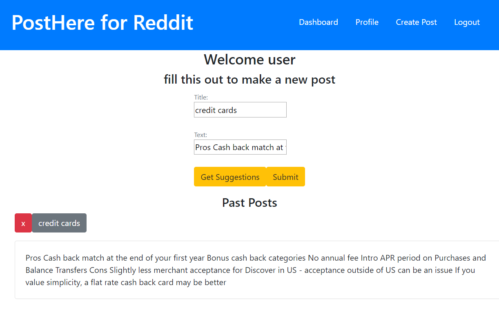
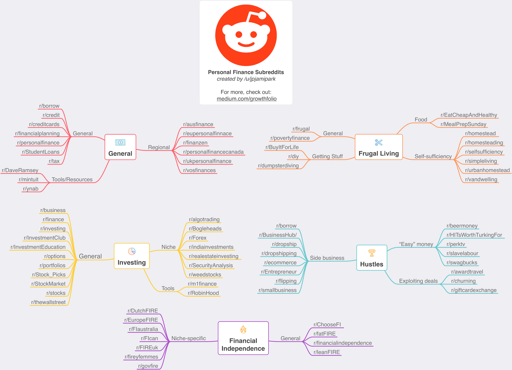

Learn about our project
Back-End
To be able to easily access our post classifying model we needed to put it in a web application online to create an interface with which a user can access that algorithm. You can type a potential post and get a suggestion of 5 subreddits that would be the most relevant or you can save it for later. You are also able to delete old posts after you have saved them.
-We use react to build front end :
Components
State management
Account system
Reddit posts Storing and Deletion.
-For the Back-End we built it using knex , heroku, postgres, Js and node modules :
Data Base
Tables
API End-points
User Authentication
Users can create an account and login they can send a post to our external api which will determine what the best subreddits for that post are. A user can then archive the post and will save that on our back end so that they can access it and change it any time they login

Algorithm
The first step for any data science problem is the data itself. When we started scraping reddit posts we searched about 100 of the most popular subreddits, plus a few we handpicked ourselves, and kept the ones that actually had text posts. It wouldn’t make sense for us to tell you to post your story in r/gifs would it? Once we were done we had over 31 thousand posts to work with, among 50 different subreddits.
Now that we had all these posts, we approached the problem as a document similarity one. To put it simply, our model takes a new post and decides which other posts it is most similar to. This works with any kind of classification model, so we tried many different kinds to see which would work best. The clear winner by far was a Random Forest model, our final version achieved 63% accuracy. And remember, if you randomly picked between 50 different categories you would only be correct 2% of the time! And when you consider the 3 or 5 most likely subreddits like our app does, it gets even more accurate.
Of course, this was all in a one week project. Given more time there would be tons of things we could do to improve this product, such as gathering more data, extensive cleaning, and model optimization.

Subreddits included:
- buildapc
- Jokes
- personalfinance
- nosleep
- dadjokes
- tifu
- history
- relationships
- TwoXChromosomes
- IAmA
- askscience
- Fitness
- leagueoflegends
- MachineLearning
- LifeProTips
- travel
- webdev
- nba
- books
- PS4
- atheism
- explainlikeimfive
- pcmasterrace
- Overwatch
- movies
- pokemon
- gameofthrones
- television
- malefashionadvice
- Music
- trees
- Android
- gaming
- lifehacks
- WritingPrompts
- Games
- DIY
- Showerthoughts
- space
- Futurology
- Tinder
- soccer
- politics
- listentothis
- philosophy
- GetMotivated
- europe
- gadgets
- technology
- tattoos